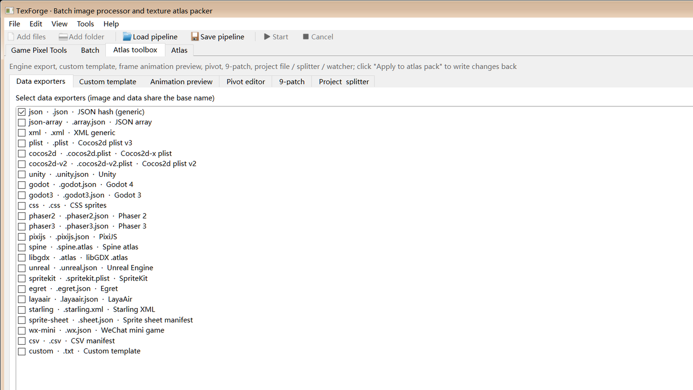
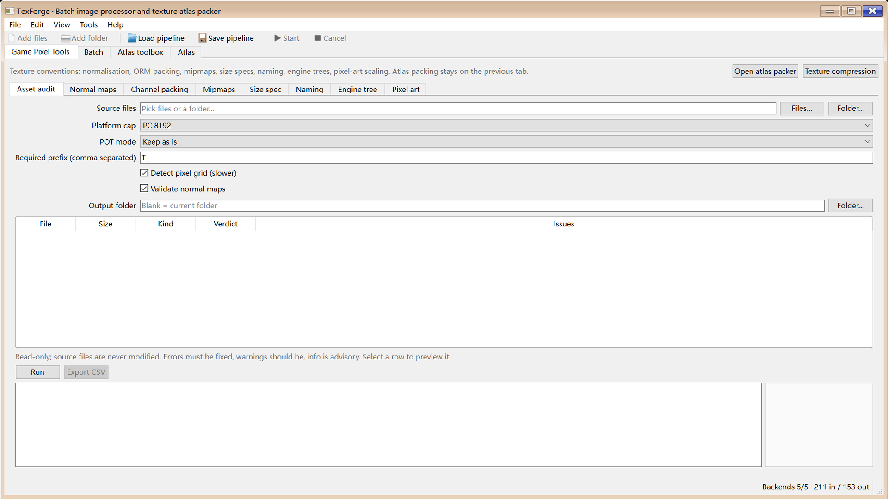

数据怎么流动
源图进入内核后，只经过一条处理链：动作序列或图集算法，然后是约束校验，最后是格式导出与报告。图形界面与命令行只是这条链的两个入口。
源图 / 文件夹→动作序列 · 图集参数→约束校验→导出 · 描述文件→结果报告
01
导入与扫描
把文件夹或单张图片拖进工作区。程序递归扫描子目录，按扩展名、命名规则与尺寸范围过滤，先让你看清「这次到底要处理什么」。
- 支持多文件夹混合导入与递归子目录
- 按扩展名、通配符与正则筛选
- 导入即统计数量、总体积与尺寸分布
- 只读扫描阶段不修改任何源文件

02
配置动作与参数
批处理侧叠加动作，图集侧设定排布、留白、裁剪与目标格式。配置完成后保存为预设（JSON），它会成为团队共享的最小复用单位。
- 113 个动作按顺序叠加，前一步输出即下一步输入
- 图集参数：留白、边缘扩展、修剪、旋转、POT 约束
- 预设可随项目走，也可提交到版本库
- 同一份预设可被 GUI 与 CLI 同时读取

03
预览与校验
导出之前先看结果。图集有排布预览与占用率，批处理有单张对比，约束校验会提前指出超尺寸、留白不一致与空区域。
- 图集排布预览，显示单图位置与整体占用率
- POT / NPOT、最大尺寸、留白一致性检查
- 法线贴图按线性数据处理，避免二次校正
- 超限项在导出前标红，而不是等引擎报错

04
导出与报告
一次运行同时产出图片、描述文件与结果报告。图集图片与描述文件同名同目录，复制进项目即可被引擎识别；报告记录每张图的处理结果与失败原因。
- 24 种引擎数据格式，按目录树规划落盘
- 图集图片 + 描述文件同名生成
- CSV / JSON 报告：成功、失败、耗时与体积变化
- 失败项可单独重跑，不必整批重来

一条内核，两个入口
界面不是独立实现。GUI 与 CLI 调用同一套动作注册表、图集打包器、导出器与报告格式，因此「界面里调好的」和「服务器上跑出来的」是同一件事。
同一个动作注册表
GUI 和 CLI 读取同一份动作定义与参数校验，不会出现界面能跑、脚本报错的情况。
同一份预设文件
预设就是 JSON。放进仓库，任何人 checkout 后都能复现同一次资源发布。
同一种报告格式
两边的结果报告结构一致，可被同一套脚本解析与归档。
命令行与 CI
把预设交给 texforge-cli，就能在脚本、构建服务器或 CI 中复现同样的结果。退出码表示成败，报告作为构建产物归档。
# 用 GUI 保存的预设跑批处理
texforge-cli batch --preset ui-icons.json --input ./art/ui --output ./build/ui
# 打包图集并导出引擎描述文件与报告
texforge-cli atlas --preset atlas-ui.json --format unity --report build/report.json- 预设、动作与参数和 GUI 完全一致，无需另写一套配置
- 非零退出码表示存在失败项，便于 CI 直接判定
- 报告可归档为构建产物，便于回溯某次发布的处理细节
为什么这样拆
每一步都能单独验证
导入、配置、校验、导出互不耦合，出问题能立刻定位到阶段，而不是在一条黑盒脚本里猜。
配置与执行分离
配置沉淀为预设，执行交给 GUI 或 CLI。同一份规范可以被人跑、被机器跑、被下一个人接手。
结果可核对
报告记录每张图的处理结果。资源发布不再是「应该没问题」，而是有据可查。
上线前建议走一遍
- 先用 5 到 10 张代表性图片验证预设，确认尺寸、命名与体积
- 确认图集描述文件与图片同名同目录，坐标与图片一致
- 法线贴图按线性数据导出，Y 轴方向与引擎约定匹配
- 跑一次平台尺寸校验，确认没有超限纹理
- 归档报告与预设，作为本次资源发布的记录
已在 Microsoft Store 上架
Windows 10 / 11（x64）直接安装，支持中文与 English 界面。